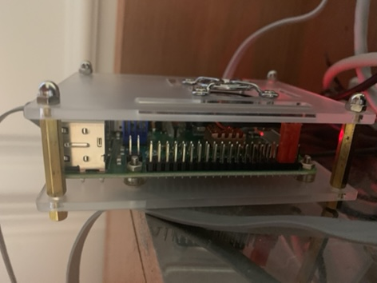
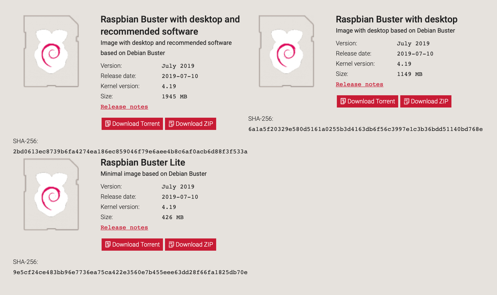
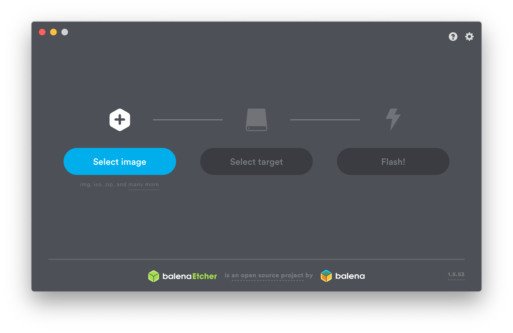
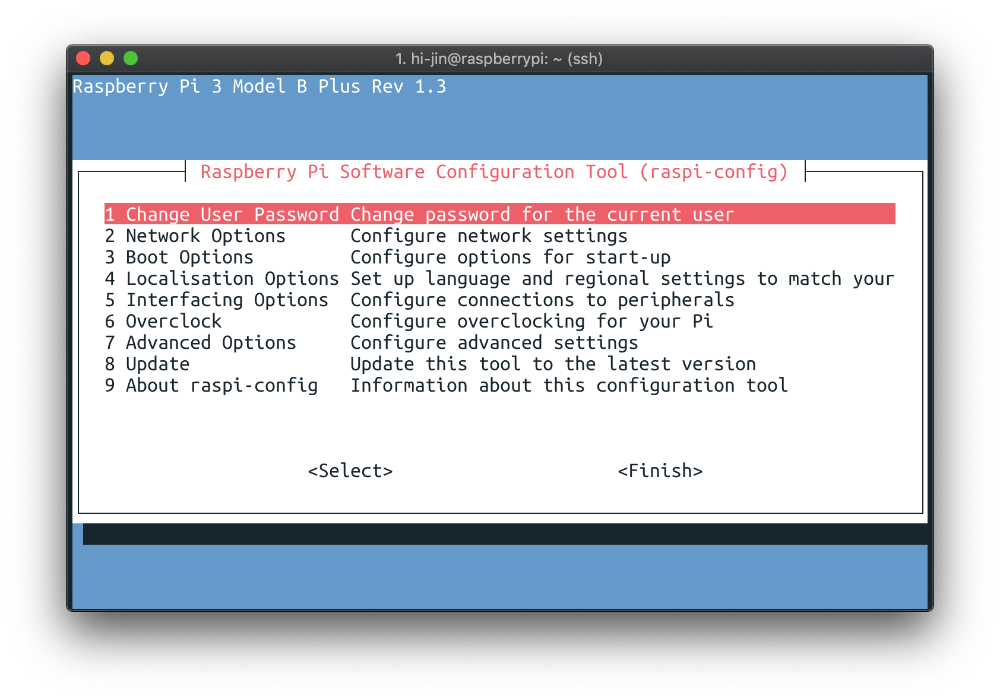
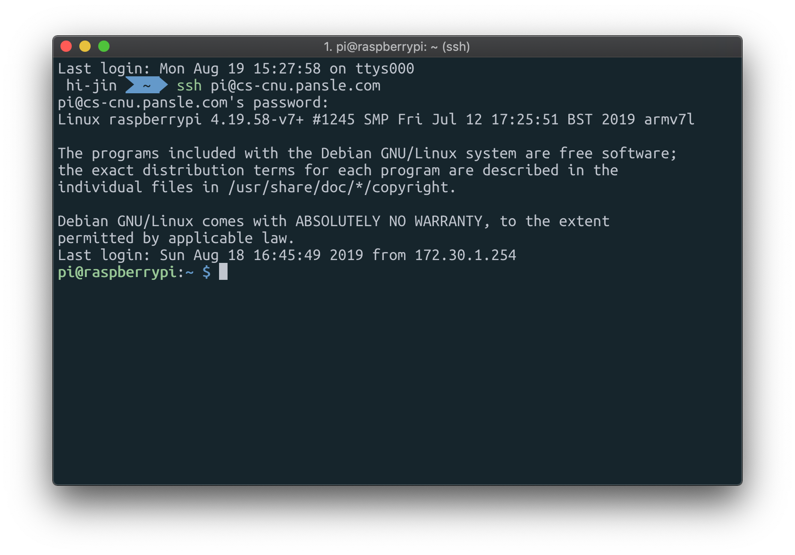

Web server
Setting Raspberry Pi
Development motive
GitHub blog로 글들을 포스팅하며 웹 공부를 하다보니, 직접 만든 서버로 웹을 구현해보고 싶다는 생각이 들어 아무것도 모르는 상태로 라즈베리파이를 구매했다.
Things needed for setting raspberry pi
라즈베리파이, (쿨러), (케이스), SD카드, SD카드 리더기, 마이크로 5핀 충전기, 랜케이블, 인터넷이 연결된 공유기
view of my raspberry pi
라즈베리파이 3 b+ / 쿨러 / 케이스

아무것도 모르고 일단 조립하고 전원을 연결한 모습이다. 쿨러가 돌아가지 않아서 고생했는데, 거꾸로 꽂았었다.
케이스를 분리해서 사진을 예쁘게 찍어서 올리고 싶었는데, 그런 사진은 인터넷에 많으니 본인은 실상(?)을 올리겠다.
Installing raspbian
라즈베리파이 공식 페이지에서 라즈비안 os를 다운로드 한다.

세 선택지 중, 위의 두 개는 여러 패키지들과 Desktop GUI가 있는 버전이라는데,
모니터랑 HDMI 선이 없기도 하고 애초에 ssh로 접속하여 사용할 생각이었기 때문에, 가장 간단한 LITE 버전을 설치했다.
Writing raspbian to SD card
Etcher를 이용하여 SD카드에 이미지를 쓴다.

그림에 나와있는 대로 따라하면 알아서 된다! (폴더 이름은 boot로 했음)
Connect LAN and Power
이제 SD카드를 꽂은 채로 공유기에 연결하고, 전원을 연결하면 팬이 돌아가고 불빛이 깜빡거리며 부팅이 된다!
공유기 페이지에서 라즈베리 파이 IP를 찾아서 ssh로 연결을 시도해봤는데...
접근이 안된다 ㅠㅠ
이런 경우에는 터미널로 cd 명령을 통해 SD카드의 boot 폴더로 이동하고, touch ssh라는 명령으로 1회성으로 ssh 연결을 허용시켜준다.
그 후에, ssh 명령으로 접속하여 root권한으로 sudo raspi-config을 실행하여 설정을 진행하면 된다.

Interfacing Option에 들어가서 ssh를 켜주는 등의 작업을 해야하는데,
여기 잘 설명되어있는 사이트가 있으니 참고하면 좋을 것 같다.
router setting
지금 상황에서 외부 내트워크에서 ssh를 이용해 접속하려고 하면, 접속되지 않을 것이다.
그 이유는 외부 IP 주소를 이용해 공유기가 가상 IP 주소를 만들어서 여러 기기로 IP를 공유하는데,
이렇게 공유된 가상 IP는 공유기의 것이므로 외부에서 찾을 수 없기 때문이다.
따라서, '포트포워딩'을 통해 외부아이피의 특정 포트로 접속을 시도하면, 특정 가상 IP로 접속하도록 만들어야 한다.
ex) 공대 5호관 401호로 와 => (포트포워딩) => 충남대학교의 공대 5호관 401호로 와
매우 설명이 잘 된 블로그가 있으니 참고하면 좋다.
connect
외부에서 정상적으로 연결된 모습이다. (도메인은 친구가 제공해줬음)

느낀점
서버는 만들었는데, 뭘 해야할지 모르겠다. 아파치, php, mysql등을 깔아서 웹서버로도 운영을 해볼지 고민중이다.
서버로 뭘 할 수 있을지 알아봐야 할 것 같다.